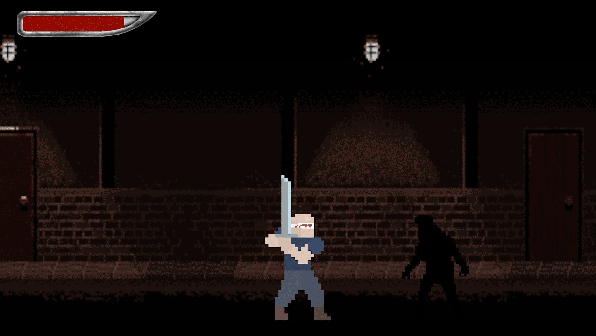
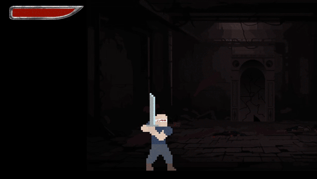
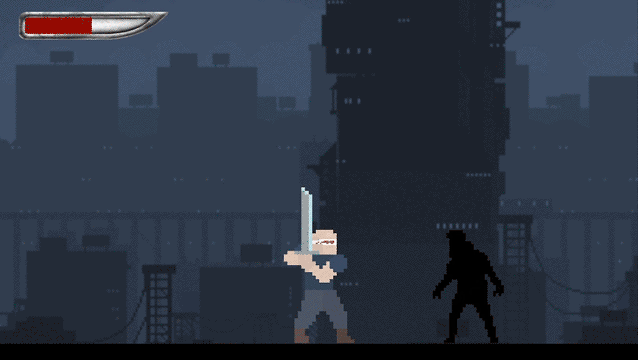
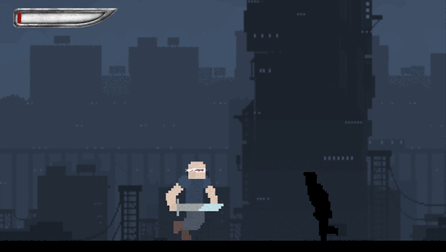
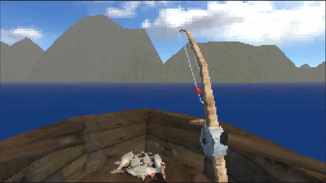
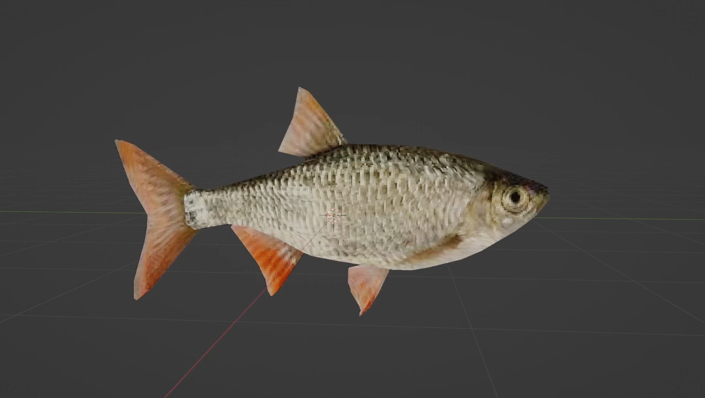
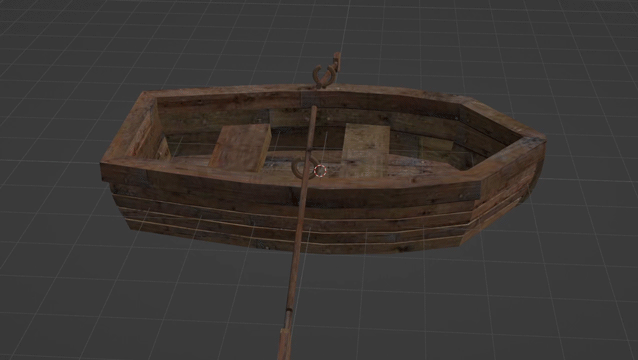

Game Designer / Indie Developer
Game Designer and Indie Developer. I focus on combat systems, unusual but compelling storytelling, and a strong game feel. Here you can find my projects that I have worked on and that I am currently working on.
Side-scroller prototype of a combat system with directional blocking. Developed during a game jam with a limited timeframe.




A psychological horror game in PSX-style about fishing.



Email: daspil888@gmail.com